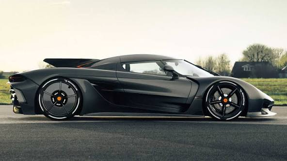
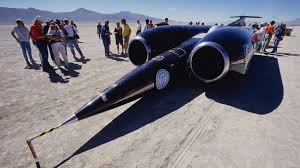

|
 The title of the fastest car in the world belongs to Koenigsegg, with their Jesko Absolut achieving an astonishing top speed of 530 kilometers per hour. |
 At an impressive speed of 12,227 kilometers per hour, the Thrust SSC is recognized as the fastest land vehicle, according to Andy Green. |
The fastest edible vehicle record is held by Mike Elder, who reached 27 kilometers per hour with a weight of 298 kilograms. |